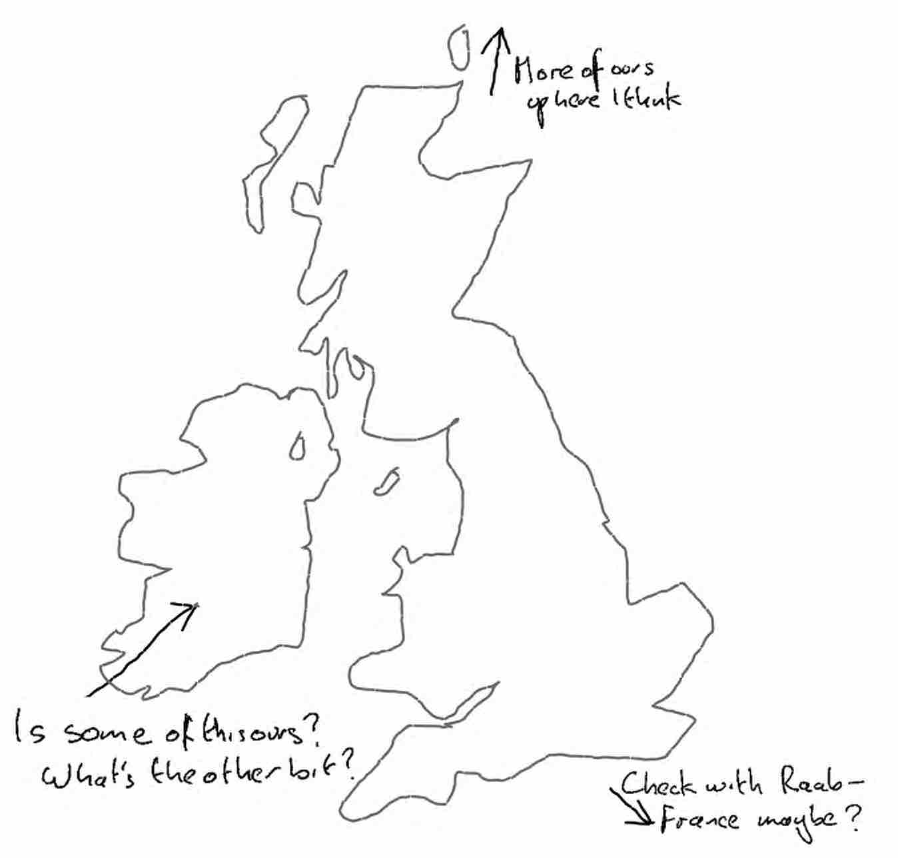

Welcome to Britain's new world-beating Independent Global British Positioning Satellite.
This app has been designed to show Britain's place in the world.
Acquiring satellites ...
So, we're having a bit of trouble finding some satellites. Ehm, what can you see?
Do you remember how you got here?
Is there anyone about? If we see someone, why don't I just wind the window down and we can ask?
OK, fine. Let's try this. Click on this map roughly where you think we might be.
Please choose a measuring system:
You are:
(Quietly make a U-turn whenever possible.)
You can now close this app.
Locating satellites...
Found 1 of 3 (0 of 3 acquired)
Found 2 of 3 (0 of 3 acquired)
Found 3 of 3 (0 of 3 acquired)
Preparing to acquire...
0 of 3 so far acquired
Lock acquired...
Initial handshake...
Price quoted...
In line with expectations...
Rejected...
0 of 3 so far acquired
Ringing James Dyson...
Singapore DDI +65...
Mobile account country-locked.
Galileo satellite spotted...
Just going to use that...
0/3 so far acquired
Second attempt using Bluetooth...
Gathering satellite connection protocol...
analysing...
analysing...
Circumventing protocol...
Access denied.
Attempting to judge by eye...
Got one...
1/3 so far 'acquired'
Oh, just a seagull...
Searching...
Searching...
Searching...
Quietly giving up...
...
Satellites 'cherry on cake' anyway...
Shhhh...
Global Britain | Independent Positioning System